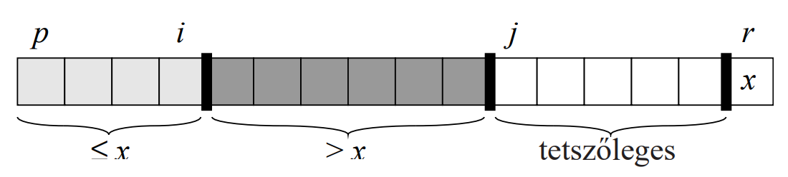

A quicksort az oszd-meg-és-uralkodj elvén alapuló rendezés, azaz a
feladatot
több kisebb részfeladatra bontja, amelyek hasonlóak az eredetihez és rekurzív módon oldják meg a
részfeladatokat, amelyeket összevonva adódik a feladat megoldása. Minden algoritmus, amely ezen az
elven alapul 3 lépésből áll. Felosztja a feladatot több kisebb részfeladatra,
"uralkodik" a
részfeladatokon való megoldásukkal és összevonja a részfeladatokat, hogy megkapja az eredeti
feladat megoldását.
A quicksort egy helyben rendező algoritmus, azaz a rendezés a tömbön belül
történik, legfeljebb csak állandó számú elem tárolódik a tömbön kívül.
Továbbá nem stabil rendezés, azaz az azonos
kulcsú elemek egymáshoz viszonyított sorrendjét nem feltétlenül őrzi meg. Például, ha van kettő
32-es, akkor nem biztos, hogy ugyanabban a sorrendben lesznek a
rendezés végén, mint rendezés előtt voltak.
Az összehasonlító rendezések közé tartozik, azaz az elemek sorrendjét azok
összehasonlításával állapítja meg.
Működése:
Az algoritmus kulcsa a felosztás, amely mindig kiválaszt véletlenszerűen egy $x$
pivot (tengely vagy őrszem) elemet. Ez lehet a tömb első eleme, utolsó eleme, középső eleme, vagy
egy random elem. Azért érdemes random elemet választani pivot elemnek, mert ezzel a „balszerencsés”
bemenetek valószínűségét csökkenteni tudjuk. Ezután ezt az elemet kimentjük egy $x$ változóba és a
legutolsó elemet az $x$ helyére rakjuk. A felosztás során 4 részre bonjuk a tömböt: $x$-nél kisebbek
vagy egyenlőek, $x$-nél nagyobbak, a még meg nem vizsgált elemek és maga a pivot elem.

Egy rekurzív folyamat végén a tömb elemei 3 részben lesznek: $x$-nél nagyobbak,
$x$-nél kisebbek vagy egyenlőek és maga a pivot elem, amelyet behelyezünk a nagyobbak és a kisebbek
vagy egyenlőek közé, oly módon, hogy a legbaloldalibb $x$-nél nagyobb elemet a tömb végére helyezzük
és a helyére berakjuk a pivotot.
Két fő részből áll: a rekurzív rendezés és a particionálás.
Particionálás:
- Kiválasztunk egy pivot elemet és kirakjuk egy $x$ nevű változóba.
- A pivot elem helyére rakjuk a tömb legutolsó elemét.
- A tömb elejétől elindulunk $i$-vel és addig megyünk, amíg nem találunk a pivot elemnél nagyobb
elemet. Ha találtunk ilyet megállunk.
- Elindítjuk $j$-t, ami $j = i + 1$-től indul. Addig megyünk $j$-vel, amíg nem találunk a pivot
elemnél kisebbet.
- Ekkor az $i$-nél egy a pivotnál nagyobb elem van, $j$-nél a pivotnál egy kisebb elem van, tehát
meg kell cserélni őket.
- A csere után megnöveljük $i$-t eggyel és a $j$-vel folytatjuk tovább a tömb bejárását.
- Ha $j=r$, azaz végig értünk, $i$-edik helyen lévő elemet (a nagyobbak legbaloldalibb elemét) a
tömb végére helyezzük. Helyére bekerül a pivot elem, ami pont a nagyobbak és a kisebb egyenlőek
közé fog kerülni.
- Majd visszatér $i$-vel, innen fogjuk tudni, hogy meddig tart a kisebb egyenlőek
résztömbje és honnan indul a nagyobbak résztömbje. A particionálást ezekre a résztömbökre is
lefuttatjuk rekurzívan.
Műveletigény:
A gyorsrendezés viselkedése nem a bemenő elemektől, hanem azok egymáshoz
viszonyított helyétől függ. A legrosszabb felosztás, ha a felosztó algoritmus az eredeti tömböt egy
$n-1$ és
egy $0$ elemű tömbre osztja fel. A legjobb felosztás, ha a felosztó algoritmus az eredeti tömböt két
$\frac{n}{2}$
elemű tömbnél nem nagyobb tömböt hoz létre. A gyorsrendezés átlagos futási ideje sokkal közelebb áll
a legjobb futási időhöz.
- $MT(n) \in \Theta(n^2)$, ez ritkán fordul elő, mivel véletlen a pivot elem választása.
- $AT(n) \in O(n \cdot log \space n)$
- $mT(n) \in \Theta(n \cdot log \space n)$
Gyakorlati alkalmazása:
A vegyes rendezésben szokták használni, ahol összekombinálják a beszúró rendezést
egy gyors rendezéssel (merge sort, quicksort, heap sort). Ha kevés elemet kell rendezni, akkor a
beszúró rendezés fut le, ha sok elemet kell rendezni, akkor a gyors rendezést használja a vegyes
rendezés.
A C++ beépített rendező algoritmusa (std::sort) egy introsort-nak nevezett
rendezést használ, amely quicksortttal indul és átvált heapsortra, ha a rekurzió mélysége elér egy
bizonyos szintet.